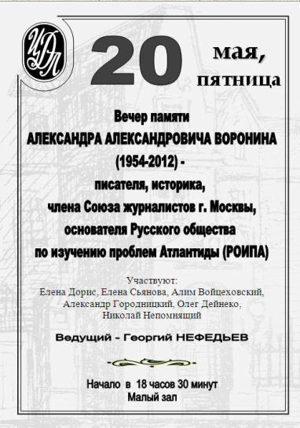
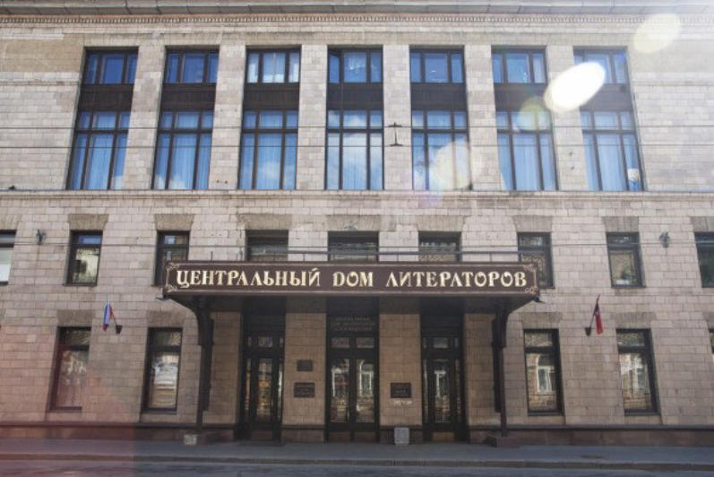
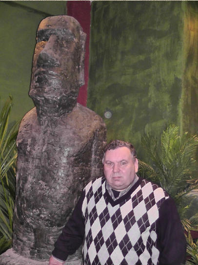
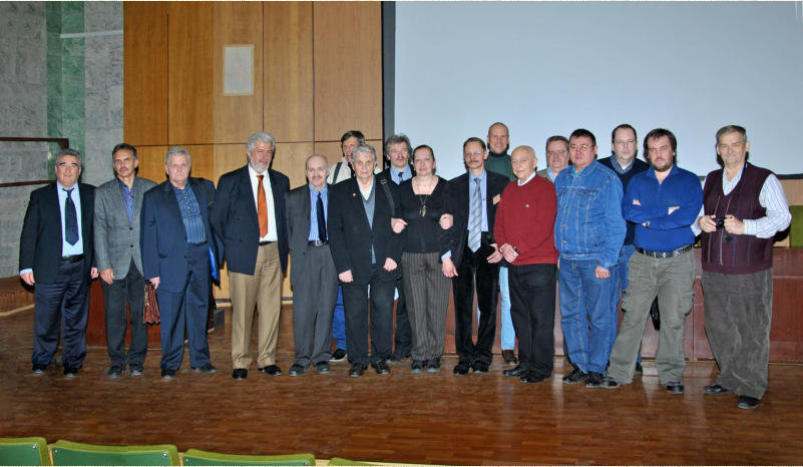
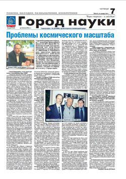
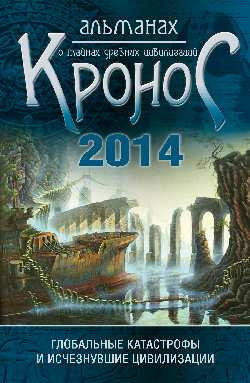

Русское общество по изучению проблем Атлантиды
Русское общество по изучению проблем Атлантиды (РОИПА) – общероссийское научно-исследовательское общественное объединение, занимающиеся изучением истории возникновения, развития и исчезновения древних цивилизаций.
РОИПА было основано 27 апреля 2003 г. А.А. Ворониным, В.И. Щербаковым, А.И. Войцеховским и Г.В. Нефедьевым.
Приоритетной задачей Общества является официальное признание атлантологии как междисциплинарной науки и включение ее в круг академических научных дисциплин.
Проблема Атлантиды рассматривается в неразрывной связи с другими древнейшими человеческими культурами.
РОИПА занимается издательской и исследовательской деятельностью, ведет обширную переписку с ведущими зарубежными организациями и исследователями древних цивилизаций.
Связаться с нами можно по электронному адресу : atlantisroipa@gmail.com
Новости
Интервью президента РОИПА Георгий Нефедьева порталу http://svpressa.ru/post/article/169114/.
Статья президента РОИПА Георгия Нефедьева, посвященная памяти Андрея Склярова ( Калининградская правда. № 101 (18713). 2017).
Русское Общество по изучению проблем Атлантиды (РОИПА) провело свои 1-е Жировские Чтения, посвященные научному наследию и его актуализации в современности выдающегося советского и российского ученого-химика, основателя атлантологии Николая Феодосьевича Жирова (1903-1970). Они состоялись 8 апреля 2017 г. в Музее "Серебряного века" (Дом В.Я. Брюсова, Москва). На Чтениях выступили: президент РОИПА Георгий Нефедьев, зам. координатора ОНИОО "Космопоиск" Александр Петухов, канд. геол.-мин. наук, директор Центра фундаментальных исследований МНЭПУ Александр Колтыпин и др. Были показаны фрагменты из документального фильма о Жирове "Берлин - Атлантида. По следам тайны".
С программой Чтений можно ознакомиться здесь.
Доклад президента РОИПА Георгия Нефедьева "Альтернативная история и атлантология" на конференции, посвященной светлой памяти Андрея Склярова.
Нефедьев Георгий Владимирович (президент Русского общества по изучению проблем Атлантиды (РОИПА)).
Атлантида как проблема современной цивилизации.
Атлантида как проблема современной цивилизации Петухов Александр Борисович (зам. координатора ОНИОО "Космопоиск").
Догматика современной науки как защита от альтернативных взглядов на нее.
Эзотерика в цифрах Колтыпин Александр Викторович (канд. геол.-мин. наук, директор Центра фундаментальных исследований МНЭПУ).
Приведение эзотерических датировок основных этапов развития Земли и человечества в соответствие с современной геохронологической шкалой.
Дорогие друзья и коллеги!
20-го мая (18.30) в Малом зале Центрального Дома Литераторов (Б. Никитская, 53)
Русское Общество по изучению проблем Атлантиды (РОИПА) проводит вечер памяти Александра Александровича Воронина - писателя, историка, основателя Русского Общества по изучению проблем Атлантиды.
На вечере будут выступать друзья и коллеги Александра Воронина, известные писатели, историки, журналисты, посвятившие во многом свою жизнь самой волнующей и романтической тайне тысячелетий - поискам легендарной Атлантиды.
Среди них: Александр Городницкий, Николай Непомнящий, Елена Сьянова, Алим Войцеховский и многие другие. Вечер ведет Георгий Нефедьев.
Вход свободный



Здесь представлен ознакомительный видеофильм о конференции:
Видео наиболее ярких докладов съезда Вы можете увидеть здесь.

В организации и проведении съезда принимали участие: Институт океанологии им. П.П. Ширшова РАН, Фонд развития науки «Третье тысячелетие», Научно-исследовательский центр по изучению древних цивилизаций, Национальное географическое Общество России, Междисциплинарная Исследовательская Группа «Истоки цивилизаций», ОНИОО «Космопоиск», Ассоциация «Экология Непознанного» и др.
20-21 апреля 2015 г. в Институте океанологии РАН им. П.П. Ширшова (Москва) прошел съезд исследователей наследия древних цивилизаций «Атлантология в ХХI веке – перспективы развития».
Этот съезд, организованный Русским обществом по изучению проблем Атлантиды (РОИПА) стал уже 4-м съездом ученых и энтузиастов, посвятивших свою жизнь и исследования разрешению одной из самых волнующих загадок человеческой истории – тайне легендарной Атлантиды.
В отличие от предыдущих съездов, проходивших в этом же Институте в 2003 и 2007 гг., прошедший съезд отличался более расширенной тематикой и статусом.
Впервые он имел статус международного, поскольку в нем приняли участие зарубежные ученые – коллеги и члены РОИПА из разных стран: Италии, Греции, Ирландии и других.
Возможно, что съезд внесет свой вклад в решение тайны тысячелетий, и исчезнувший с официальных карт нашего доисторического горизонта древний остров Атлантида займет свое полноправное и уникальное место в нашей истории.
Ознакомиться с фотоматериалами и программой съезда можно здесь.
Пресса о РОИПА
В рубрике "ПОИСКИ, НАХОДКИ, РАЗМЫШЛЕНИЯ, ИЗОБРЕТЕНИЯ", газеты «Калининградская правда» ( г.Королёв ), от 25 сентября 2014 г. опубликовано интервью президента РОИПА Георгия Нефедьева.

Дорогие друзья, уважаемые коллеги и члены РОИПА!
Поздравляем всех Вас с выходом второго номера альманаха о тайнах древних цивилизаций "Кронос" (Москва: "Вече", 2014; 480 с.)

Arcana Factor
Только что успешно завершилась экспедиция российского проекта "Arcana Factor" к геоглифам пустыни Наска. Были произведены уникальные фото и видео съемки. Подробнее можно посмотреть на официальном сайте проекта : Arcana Factor : Плато Наска-2014
Кон-Тики-XXI
Предлагаем Вам познакомиться с историко-географическим международным экспедиционным проектом «Кон-Тики-XXI». Для просмотра официальных ресурсов проекта Вы можете перейти по следующим ссылкам : Блог, Сайт, Видеопрезентация
Наши друзья
Контакты
Нефедьев Георгий Владимирович (президент РОИПА) - 8(916)565-08-06
Комогорцев Алексей Юрьевич - 8(910)421-92-07
Мирошниченко Юрий Викторович - 8(963)634-84-67